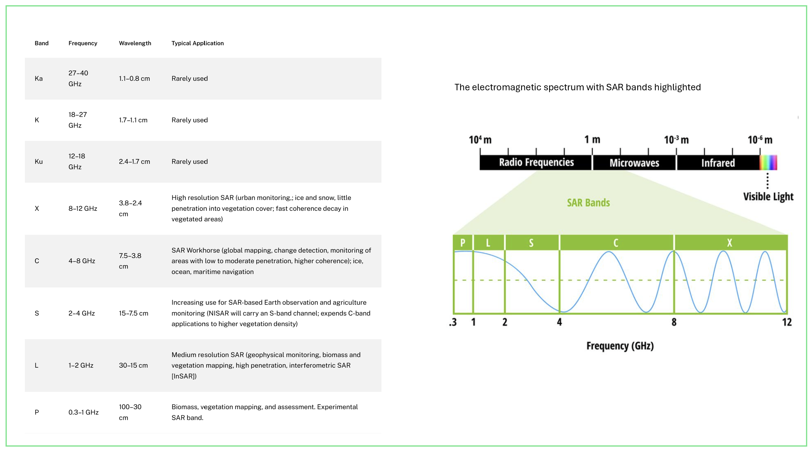
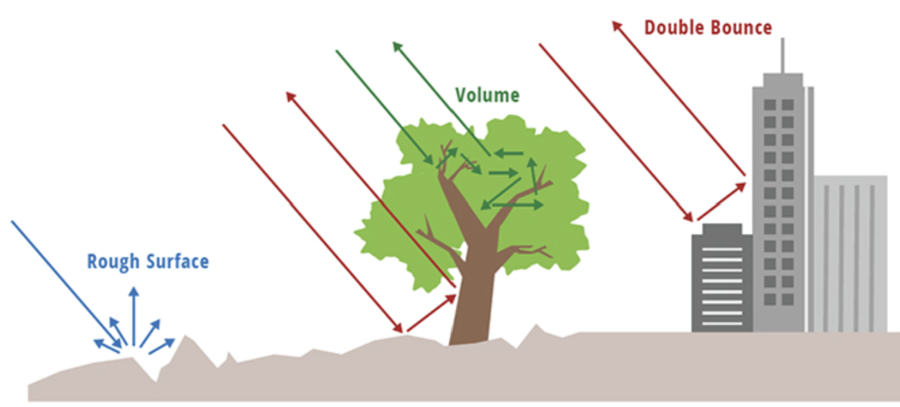
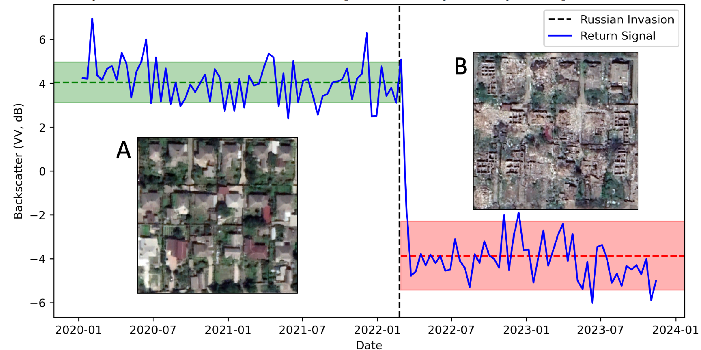

9 Synthetic Aperture Radar
9.1 Summary
Today’s lecture explores sensor imagery called Synthetic Aperture Radar (SAR). Well the name sounds complicated :) The only word that unfamiliar for me is ‘aperture’, after asking Chatgpt with prompt of ‘concise and explain to 15 years old’, I learned that aperture is like the opening of camera, the wider the aperture the less focus the image captured and the more light it lets in. Meanwhile, radar is an active sensor that emits energy for illumination. Due to its longer wavelength, it can penetrate clouds or dust and capture images at night.
If optical images are like our eyes, SAR is like a bat, emitting chirps of sounds to locate his prey and other objects. It identifies objects by listening to the reflected signal. The signal that reflects back to the satellite is called backscatter. There will be a low backscatter if the signal hits a flat surface and goes off into space. Meanwhile, it will produce high backscatter when it hits an object and reflects back to the satellite. SAR images are typically grayscale; the more signal returned to the satellite, the brighter (higher value) it appears. I remember that multispectral images have spectral bands, and this also applies to SAR. There are many bands, but the most commonly used is the C band, like the bands in Sentinel-1.

Figure 1. SAR Bands with frequency and wavelength. Source : NASA
Radar can collect signals with different polarization. Polarization describes the direction in which the plane of a transmitted electromagnetic waves move back and forth. When signal emitted in vertical (V) and received horizontal it indicated V-H, meanwhile when the signal both emitted and received horizontal it indicated H-H. Different surface will respond differently to the polarizations, such as:
| Type of Scattering | Occurs when…. |
|---|---|
| Rough surface scattering | signal interact with irregularities of surface and most sensitive to VV scattering (example : bare soil or water) |
| Volume scattering | signal interacts with multiple scatterer such as leaves in forest, most sensitive to VH or HV |
| Double bounce scattering | signal reflects off two surfaces before returning back to sensor. This creates strong backscatter and most sensitive to HH. (example : tree and building). |
Here’s the illustration to understand the type of scattering in radar.

Figure 3 : Type of scattering. Source : NASA
9.2 Application
I would like to mention the application of optical remote sensing versus SAR Imagery in a research area that was initially unfamiliar to me but has become one of my interest in recent years. This week’s topic would be damage detection during conflict.
During conflict, the need to assess building damage is crucial for humanitarian relief efforts. However, in the past the detection depended on eyewitness reports and manual detection. We know that time is precious during conflict and humanitarian aids. This calls Mueller et al. (2021) to generate damage monitoring using Very High Resolution (VHR) satellite imagery, good for its ever-higher resolution and frequency, and using machine learning techniques. The intuition behind the method is using Convolutional Neural Networks (CNNs) to learns from example of destruction (e.g rubble and bomb raters) to make predictions about other images. Then to address the challenges of limited amount of labeled data (because sometimes the destruction is sparse or only limited buildings destroyed), they use label-augmentation technique which assumed destroyed at a certain time building will remain destroyed in subsequent time. This assumption helps to create additional labels for training dataset. The result is shown below, showing damage before and after a significant heavy weaponry attack in a neighborhood of Aleppo, with red indicates patch that is highly predicted as destroyed while green is low prediction score.

Fig 1 : Damage destruction using optical satellite data. Source : Mueller et al. (2021).
However, I pondered upon the use of VHR imagery in the analysis as it must be financially expensive, thus not everyone can get the access into it. It must be nice to have the open access data for this damage detection, right? and Ollie, our Remote Sensing lecturer, has found the solution ! He managed to find a new method for building damage detection using Pixel-Wise T-test (PWTT) and SAR in Sentinel 1. Yes, you read that right– it’s sentinel 1—which means it is open access ! Using this algorithm, he could achieve building-level accuracy higher than deep learning + VHR method (Ballinger 2024). He uses SAR imagery because it emits a pulse towards the earth and then measure its return signal, enabling the analysis of how different textural surface respond differently.
The intuition behind the methodology is that he investigates how much of the radar signal is reflected back to the satellite, which called backscatter amplitude. Basically, building and rubble will reflected the radar signal differently. The algorithm then compares the backscatter amplitude of each pixel during period before the conflict and after the conflict. To determine, the change in backscatter is significant enough to be classified as damage, he uses T-test to know how much the variation over time and take the largest value detected as a potential damage in that pixel. See the figure 2 below, the green shows condition before invasion while the red is after invasion. Meanwhile, the dashed line showed the average backscatter amplitude with ±1 standard deviation before and after the building’s destruction.

Fig 2 : The intuition behind damage detection using SAR. Source : Ballinger (2024)
For me the performance of open source data to outperform VHR satellite presents opportunities for many people. It will encourage knowledge development faster as different people with different background be able to explore and find the ‘rabbit hole’.
9.3 Reflection
I was thinking, if SAR is this good able penetrate objects and imaging at night what kind of weakness does it have. When backscattering emit signal that bounced by so many things it must be challenging to do the analysis more over the imagery appear black.